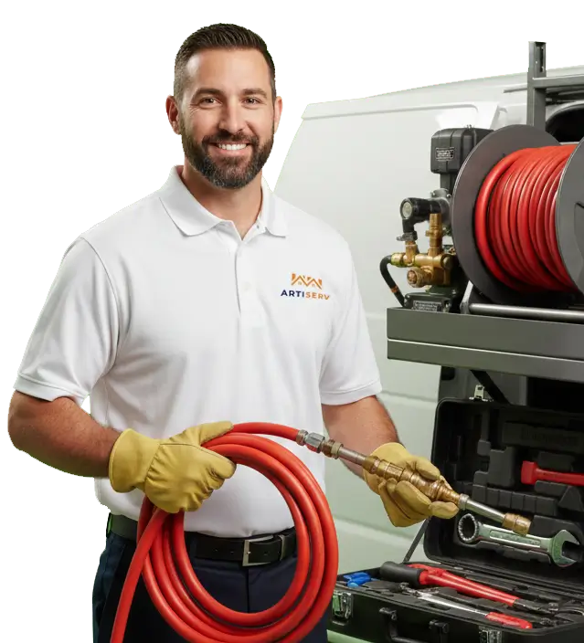

Expert en débouchage de canalisations sur Vitry-sur-Seine et le Val-de-Marne. WC, évier, douche bouchés ? Intervention rapide 24h/24 avec matériel professionnel. Curage, hydrocurage, inspection caméra.

ARTISERV Débouchage intervient rapidement sur Vitry-sur-Seine et dans tout le Val-de-Marne pour tous vos problèmes de canalisations bouchées. Que ce soit un WC bouché, un évier qui ne s'écoule plus, une douche obstruée ou une canalisation principale engorgée, nos techniciens qualifiés disposent de l'expertise et de l'équipement professionnel nécessaire pour un débouchage efficace et durable.
Nous utilisons des techniques adaptées à chaque situation : débouchage manuel, furet électrique, hydrocurage haute pression pour les obstructions tenaces, et inspection vidéo pour diagnostiquer précisément l'origine du problème. Notre intervention est garantie, rapide et sans dégâts pour vos installations.
Zone d'intervention : Vitry-sur-Seine, Paris, Saint-Denis, Boulogne-Billancourt, Montreuil, Argenteuil et toutes les communes le Val-de-Marne. Intervention d'urgence en moins de 30 minutes.
Évacuation lente ou totalement bloquée ? Accumulation de graisses, résidus alimentaires, savon, cheveux dans le siphon ? Débouchage rapide et efficace.
Débouchage évier →Débouchage rapide de vos toilettes obstruées par papier, lingettes ou objets. Intervention d'urgence pour éviter le débordement. Furet spécialisé, pompe manuelle ou hydrocurage selon l'obstruction.
Débouchage WC →Eau stagnante due aux cheveux, savon, calcaire ? Démontage siphon, débouchage évacuation, élimination odeurs.
Débouchage douche →Engorgement de la colonne affectant plusieurs points d'eau. Curage haute pression, inspection caméra, débouchage pro.
Réseau extérieur bouché : canalisations enterrées, regards d'évacuation, descentes pluviales. Curage complet.
Fosse engorgée ou saturée. Vidange, curage canalisations, débouchage épandage. Camion hydrocureur pro.
Ventouse pro, pompe manuelle, déboucheur pression. Rapide, sans chimique, idéal pour WC et éviers. Préserve vos installations.
Câble flexible motorisé jusqu'à 30m. Têtes rotatives adaptées : spirale pour bouchons, lames pour racines. Puissant et précis.
Curage à l'eau jusqu'à 200 bars. Élimine graisses, calcaire, racines. Nettoie les parois intégralement. 100% écologique.
Caméra endoscopique pour visualiser l'intérieur des canalisations. Localisation GPS des défauts. Rapport vidéo remis.
Vous décrivez le problème : WC bouché, évier lent, canalisation engorgée. Nous estimons le type d'intervention nécessaire.
Technicien sur place en -30 min avec camion équipé : furet, hydrocureur, caméra. Tout le matériel pro embarqué.
Examen de la situation, localisation de l'obstruction. Devis gratuit détaillé avant intervention. Inspection caméra si besoin.
Technique adaptée : manuel, furet ou hydrocurage. Vérification de l'écoulement. Nettoyage zone d'intervention. Conseils préventifs.
Les canalisations bouchées sont un problème fréquent dans les habitations et peuvent avoir de multiples origines. Comprendre les causes permet de prévenir les engorgements et d'adopter les bons gestes au quotidien.
La principale cause de canalisations bouchées dans les cuisines. Les graisses se solidifient en refroidissant, s'accumulent sur les parois et forment des bouchons compacts. Évitez de verser huiles, graisses et restes alimentaires dans l'évier.
Dans la salle de bain, l'accumulation de cheveux mêlés au savon crée des amas qui obstruent progressivement les évacuations de douche, baignoire et lavabo. Les cheveux longs sont particulièrement problématiques. Utilisez une grille de protection.
Les lingettes "jetables", même biodégradables, ne se dissolvent pas dans l'eau et créent des bouchons majeurs. Le papier toilette en excès peut aussi s'accumuler. Jetez uniquement du papier toilette en quantité raisonnable dans les WC.
Les racines pénètrent dans les canalisations enterrées à la recherche d'eau, créant des fissures puis des obstructions importantes. Problème fréquent sur les réseaux extérieurs et anciens. Nécessite inspection caméra et hydrocurage.
Dans les zones d'eau dure, le calcaire se dépose progressivement sur les parois des canalisations, réduisant leur diamètre. L'accumulation de tartre crée des aspérités favorisant l'accroche d'autres résidus. Curage préventif recommandé.
Canalisation affaissée, cassée ou mal installée (mauvaise pente, coudes trop serrés). Ces défauts provoquent des points d'accumulation récurrents. Détection par inspection caméra, réparation par remplacement de tronçon.
Devis gratuit avant intervention. Nos tarifs sont clairement affichés, sans surprise ni frais cachés.
Nos techniciens arrivent en moins de 30 minutes sur Vitry-sur-Seine et tout le Val-de-Marne. Disponibles 24h/24, 7j/7.
Appelez maintenantLa durée d'intervention varie selon la nature et la gravité du bouchon :
Nous vous communiquons toujours une estimation précise après diagnostic initial.
Oui, nous proposons un service d'urgence 24h/24 et 7j/7 pour les situations critiques.
Nos techniciens peuvent intervenir rapidement à Vitry-sur-Seine et Paris, Saint-Denis, Boulogne-Billancourt, Montreuil, Argenteuil dans les cas suivants :
Pour une intervention d'urgence, contactez-nous au 09 80 80 55 05. Un technicien vous rappellera sous 15 minutes maximum et interviendra dans les meilleurs délais.
Oui, nos interventions de débouchage sont garanties.
Si un nouveau bouchon se forme au même endroit pendant la période de garantie, nous intervenons sans frais supplémentaire. La garantie ne couvre pas les nouveaux bouchons causés par une mauvaise utilisation (objets jetés, accumulation de déchets).
Nos tarifs varient selon le type d'intervention nécessaire. Voici nos prix indicatifs :
Devis gratuit et sans engagement. Nous établissons toujours un diagnostic précis avant intervention pour vous communiquer le tarif exact. Aucune surprise sur la facture finale.
Voici nos recommandations pour prévenir les bouchons :
Au quotidien :
Entretien préventif :
Nous proposons des contrats d'entretien annuel pour vous garantir des canalisations saines toute l'année.